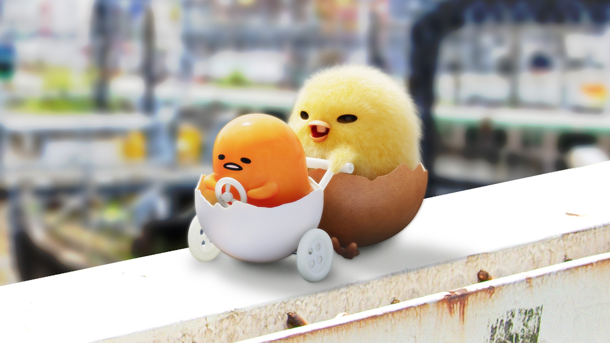

About Gudetama
Gudetama is a perpetually tired, apathetic anthropomorphic egg yolk. He is the main character of Gudetama: An Eggcellent Adventure, where he meets Shakipiyo and together they embark on a journey to find their mother.

Gudetama and Shakipiyo.
Gudetama's Characteristics
- He's yolk of a raw egg with a butt crack and a yellow color similar to honey and ripe corn kernels.
- He has a head with no neck and a body with limbs, but no fingers and toes.
- His eyes are drawn like two black beans, appearing lazy. It also has a mouth with no obvious teeth.
- He likes flavorful egg-based foods, bacon and his main indulgence is soy sauce, which is depicted as motivating it to move or respond
- Despite its apathy, Gudetama enjoys simple, lazy pleasures rather than intense actions, embodying a relatable energy of relaxation and lethargy
- Beyond food, Gudetama enjoys resting in comfortable positions, such as lying on egg whites or wrapping itself in bacon as a blanket